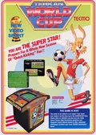
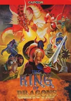

Marca cada prueba al hacerla. Se guarda en este móvil. Al acabar, pulsa Enviar resultados y pégamelos.
0 de 12 hechas
Juegos (12)
97

Tehkan World Cup
🔁 Pasado de MAME 2003 a FinalBurn Neo el 2026-11-17: comprobar que arranca, la velocidad, el sonido y los botones de la tabla (con MAME se probó bien). Ojo: con MAME había un ajuste propio en su menú interno (seguramente el trackball con el joystick), que FinalBurn Neo no usa: mirar cómo se mueve el balón.
🔎 Mirar en la bartop:
¿A dos se juega a la vez o por turnos?
Otras dudas de la guía (1; no hace falta buscarlas)
⚠️ La descripción de la ficha solo nombra 15; falta una.
que B gire la pieza. ¿Hace algo A? Que los dos jugadores jueguen a la vez. Según StrategyWiki, en esta versión las piezas solo giran en un sentido (contrario a las agujas del reloj).
que B ataque, A salte y R haga la magia. Según las guías: un botón ataca (sin atacar, el hacha se carga y se enciende), otro salta y el tercero lanza el rayo, que necesita al menos una punta de flecha azul.
Otras dudas de la guía (2; no hace falta buscarlas)
Roche devuelve el valor a la gente y parte hacia el castillo de Algerine para derrotar al señor de los demonios, Argos (⚠️ la descripción de la ficha lo llama Algos y lo hace un mago malvado), y devolver la paz al mundo.
⚠️ Ninguna fuente dice qué hace cada uno de los cuatro botones; la «Próxima prueba» de la ficha sigue en pie.
Otras dudas de la guía (3; no hace falta buscarlas)
Son Chu Xing Han, Greg Tien Ray, Wu-Ping, San Kuan Ging, Shiong Chien Chien y Huang Her. ⚠️ Los nombres vienen de la descripción de un vídeo, con la grafía de la versión de EE.
Final (cuenta el desenlace): ⚠️ no lo describen las fuentes; está en el capítulo «Ending» del vídeo.
En el vídeo de «Vídeos», tres fases largas hasta el final. ⚠️ El número puede depender del camino elegido.
Botones
Atacar ⚠️
Saltar ⚠️
Ataque especial ⚠️
Usar objeto ⚠️
Empezar
Meter una moneda
+
Salir del juego
101

The King of Dragons
que B ataque y A salte, y que B + A haga el ataque especial. Según las guías, B + A lanza la magia (gasta vida) y, con guerrero, clérigo o enano, atrás justo antes del golpe para con el escudo.
Otras dudas de la guía (1; no hace falta buscarlas)
⚠️ El vídeo marca 15 fases y Wikipedia habla de 16.
Que arranque y que los botones hagan lo de la tabla.
Botones
Disparar flechas ⚠️
Saltar ⚠️
Empezar
Meter una moneda
+
Salir del juego
103
The Ninja Kids
que B ataque y A salte. Los dos jugadores a la vez.
Otras dudas de la guía (1; no hace falta buscarlas)
Según los capítulos de otros vídeos, los pergaminos llevan nombres como Blizzard, Jet Water, Fireball, Thunderbolt, Salamander o Time Stop. ⚠️ Sin descripción en las fuentes.